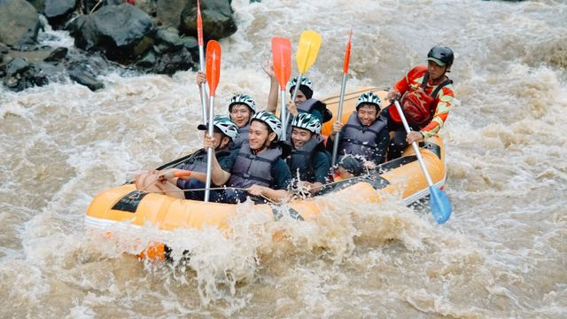

A Rafting Adventure nasceu no meio de uma enchente — ou melhor, da vontade de não desistir depois dela. Fundada por um grupo de amigos que começou com um único bote remendado e mais coragem do que dinheiro, a empresa levou os primeiros anos aprendendo na marra: dias sem passageiros, rios traiçoeiros, equipamentos que quebravam na hora errada.

Mas cada obstáculo virou ensinamento — quando faltava cliente, sobrava treino; quando faltava verba, sobrava criatividade. O que sustentou a empresa nos momentos difíceis foi exatamente o que ela prega nas corredeiras: nunca remar sozinho. Hoje, com uma frota de botes coloridos e milhares de passageiros felizes, a empresa não esquece de onde veio: segue honesta nos preços, transparente nas condições e generosa no reconhecimento.